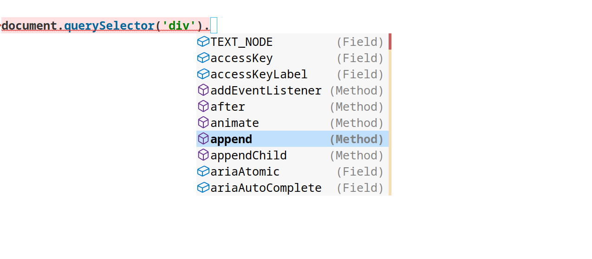
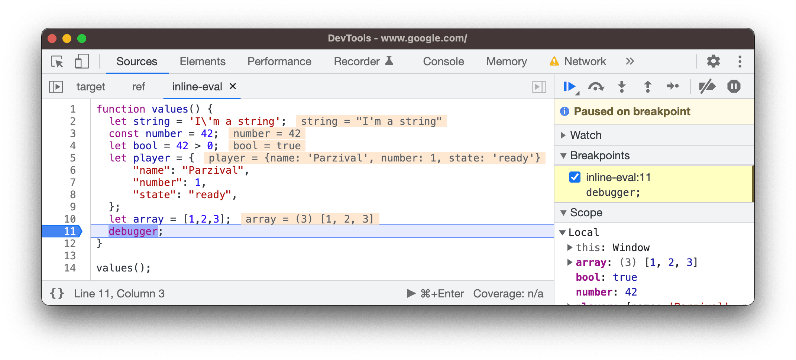

JavaScripter writing XQuery: Formatting XQuery code
Martin Middel
Declarative Amsterdam, 9 November 2025
A brief history of me
Started (professionally) writing JavaScript code around 2012

console.log('Here!')document.querySelector('div').?????
node.apendChild(newChildNode);
if(something) {doSomething(); console.log('Did something!')}
else {
doNothing()
}But that improved!
2013: Typechecking with TypeScript!
// Property 'apendChild' does not exist on type 'Node'.
// Did you mean 'log'?(2551)
node.apendChild(newChildNode);
2016: Autocomplete with Language Server Protocol

Step through debugging with Chrome (2017) and Firefox (2018)

2017: Automated formatting with Prettier
if (something) {
doSomething();
console.log("Did something!");
} else {
doNothing();
}It was starting to get good!
And then: XQuery
Felt like going back in time a bit...
child:pidnex-of(('a', 'b'), 'a')trace($var, 'I am here!')
if ($something) then (util:log('info', 'Did something!'), local:do-something()) else
local:do-nothing()Introducing!
prettier-plugin-XQuery

if ($something) then (util:log('info', 'Did something!'), local:do-something()) else
local:do-nothing()
<table>{
for $i in 1 to xs:int($data?rows)
return <tr>{for $j in 1 to xs:int($data?cols) return
<td>
<p>cell at {$i},{$j}</p></td>
}</tr>
}</table>let $a :=
ancestor-or-self::div|section otherwise
descendant-or-self::div|section
return $a => exists()